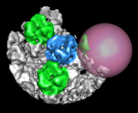

|  |
Volume Eraser allows parts of volume data maps to be zeroed out interactively. After the Volume Eraser sphere has been moved to a desired location, data values for all points inside the sphere can be set to zero. The modified data can be saved to a file with Volume Viewer. See also: Keyboard Shortcuts, mask, vop
There are several ways to start Volume Eraser, a tool in the Volume Data category (including from the Volume Viewer Tools menu).
Show volume-erasing sphere controls whether the sphere is shown and can be moved with the mouse. This option is automatically activated when Volume Eraser is started and deactivated when the tool is closed or iconified. Upon activation, the sphere will appear in the center of the screen at the frontmost face of the current display region of data in Volume Viewer. The position of the sphere is forgotten upon deactivation.
The sphere's Color can be adjusted by clicking the color well and using the Color Editor. The sphere's Radius can be adjusted by entering a value or moving the slider. The radius is initially set to one-tenth of the largest dimension of the current display region of volume data.
Use mouse [button] to move sphere controls which mouse button is used to move the sphere. The indicated mouse button, which can be changed using the pulldown menu, is reassigned from its existing function to sphere movement. Combining the indicated button with Shift moves the sphere in the Z dimension (perpendicular to the screen); dragging down/left brings the sphere forward and dragging up/right moves it away.
Clicking Erase zeroes the sphere-enclosed portion of the volume data. There is no undo capability. However, a copy of the current display region is automatically generated in the first cycle of erasure, and erasures apply only to that copy. The copy is named after the original data; if the original data is named data123, the copy will be named Writable copy of data123. The original data is not affected, allowing the process to be restarted if a mistake is made.
After one or more cycles of erasure, the modified data can be saved to a file with Volume Viewer.
Close closes the Volume Eraser interface. Help opens this manual page in a browser window.
Several accelerators (keyboard shortcuts) are available for editing volume data, including:
The sphere is implemented as a marker. The Volume Eraser sphere is implemented as a marker, like those created by Volume Tracer. Moving the sphere is equivalent to moving a marker.
Hidden data is also erased. Data can be erased even if it is hidden by clipping planes, zoning (with Surface Zone or zoning in Volume Viewer), or subregion selection in Volume Viewer.